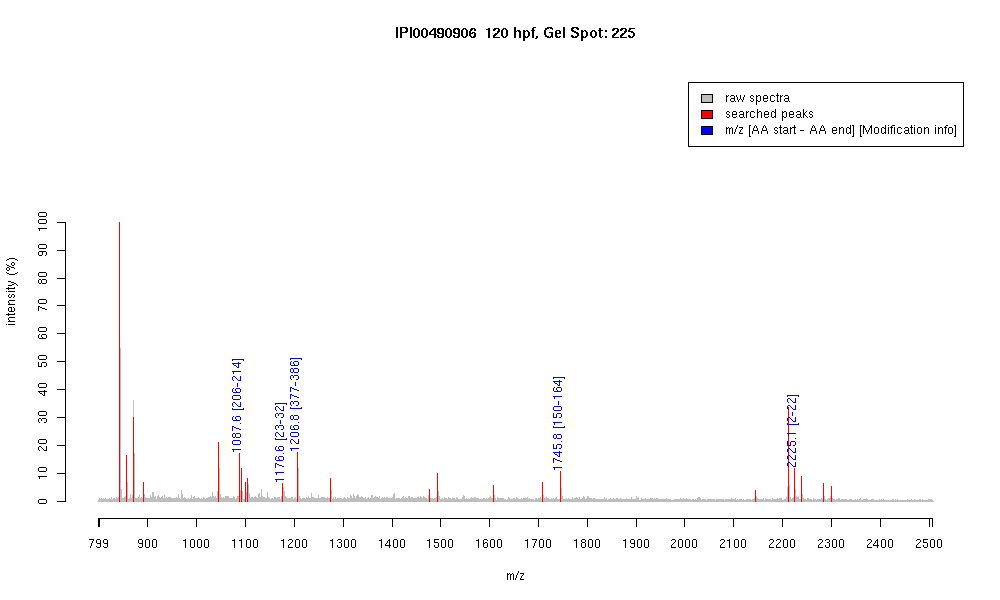

| Name | PREDICTED: similar to Fascin(Singed-like protein) (55 kDa actin bundling protein)(p55) isoform 1 |
|---|---|
| MW | 54662.7 |
| PI | 6.11 |
| Mascot Protein Score | 82 |
| Masses (matched / unmatched) | 5 / 26 |

| Peptide | MZ (calc) | MZ (observed) | Error (DA) | Error (PPM) | Start | Stop | Modifications |
|---|---|---|---|---|---|---|---|
| TTGYTLEFR | 1087.5419 | 1087.5557 | 0.0138 | 13 | 206 | 214 | |
| YLTAETFGFK | 1176.5935 | 1176.5948 | 0.0013 | 1 | 23 | 32 | |
| LINRPLIVLR | 1206.8044 | 1206.8131 | 0.0087 | 7 | 377 | 386 | |
| YAHLSSEQNEIAIDR | 1745.8453 | 1745.8324 | -0.0129 | -7 | 150 | 164 | |
| TANGTSDMLKIQFGLINCGNK | 2225.1052 | 2225.1003 | -0.0049 | -2 | 2 | 22 |